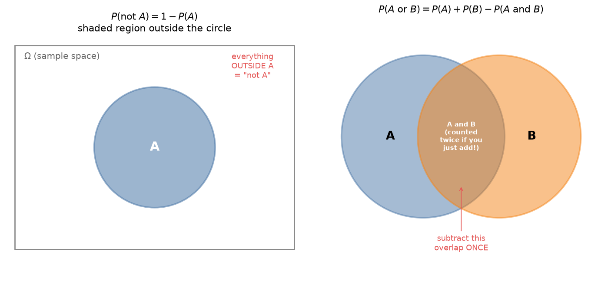
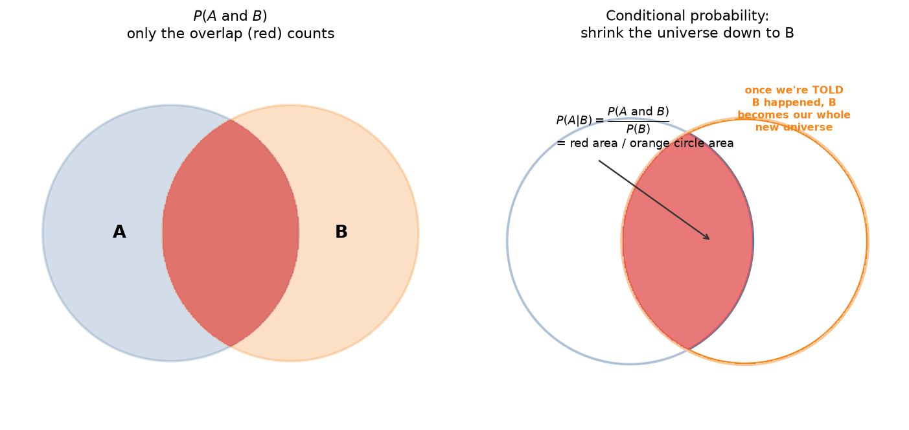
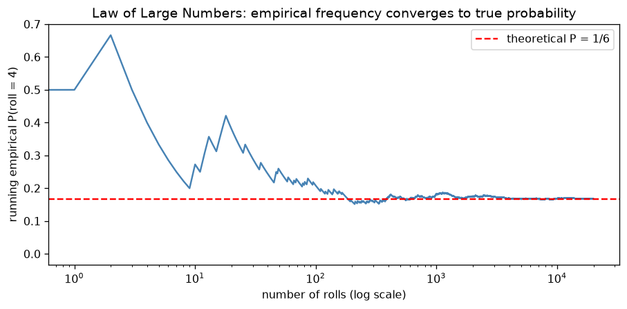

Chapter 3: Probability Foundations - Events, Rules, and Conditioning
Why we need a whole separate subject just for "chance"
Descriptive statistics (Chapter 2) summarizes data you already collected. But before you collect data, you often need to reason about what's likely to happen - and after you collect data, you need a precise language to express "how sure are we?" Probability is that language. Everything from here through Chapter 8 is pure probability theory - no real datasets yet - because this is the scaffolding that inferential statistics (Chapter 9+) and ultimately ML model outputs ("this image is 93% likely to be a cat") are built on.
Intuition, in one breath: Probability is just counting-favorable-cases in disguise, and every rule about "or", "and", and "given that" is bookkeeping to keep the counting honest.
Sample space and events
The sample space ($\Omega$, read "omega") is the set of all possible outcomes of a random process. Rolling a six-sided die: $\Omega = \{1,2,3,4,5,6\}$. Flipping two coins: $\Omega = \{HH, HT, TH, TT\}$.
An event is any subset of the sample space you care about - "rolling an even number" is the event $\{2,4,6\}$.
A probability $P(A)$ is a number between 0 and 1 assigned to event $A$, satisfying: - $P(A) \ge 0$ for any event. - $P(\Omega) = 1$ (something in the sample space definitely happens). - If two events can't both happen (mutually exclusive, e.g. "roll a 2" and "roll a 5"), $P(A \text{ or } B) = P(A) + P(B)$.
That's genuinely the entire axiomatic foundation. Everything else in probability is derived from these three rules.
The backstory - probability existed for centuries before anyone agreed what it meant
Gamblers and mathematicians (Pascal, Fermat, Huygens) were correctly computing odds for dice and card games as early as the 1650s, motivated by actual gambling disputes - a nobleman named Chevalier de Méré asked Pascal why one dice bet seemed profitable in practice but another, superficially similar one, wasn't, and the resulting correspondence between Pascal and Fermat is often cited as probability theory's true starting point. But for nearly 300 years afterward, "probability" had no single rigorous, agreed-upon mathematical foundation - different schools of thought argued about whether it fundamentally meant "long-run frequency of repeatable events" (the frequentist view) or "a rational degree of belief" (closer to how Bayes and Laplace, Chapter 4, used it). It was the Soviet mathematician Andrey Kolmogorov, in a short 1933 monograph, who settled the question not by picking a side in that philosophical debate, but by sidestepping it: he laid down the three bare axioms you saw above ($P(A)\ge 0$, $P(\Omega)=1$, additivity over mutually exclusive events) as a self-contained mathematical structure, borrowing the rigorous language of "measure theory" from pure mathematics. The genius of Kolmogorov's move was that both the frequentist and the Bayesian/belief interpretations of probability can sit on top of his same three axioms without contradiction - the axioms describe the math, while frequentist vs. Bayesian remains a separate question about what real-world meaning you attach to that math. This is why, even though Chapters 4 and 17 of this book present a philosophically different flavor of probability than the "classical" hypothesis-testing chapters (9-13), they're all built on the exact same Kolmogorov axioms you just learned - the disagreement is about interpretation, never about the arithmetic.
The two ways to get a probability number
- Classical/theoretical: count favorable outcomes over total outcomes, when all outcomes are equally likely. A fair die: $P(\text{roll a 4}) = \frac{1}{6}$.
- Empirical/frequentist: run the experiment many times and compute the relative frequency. Roll a die 10,000 times, count how often you got a 4, divide by 10,000. As the number of trials grows, this empirical frequency converges to the theoretical probability - this convergence fact is called the Law of Large Numbers, and we'll prove it to ourselves visually in the code below (and formally connect it to Chapter 8).
Combining events: AND, OR, NOT
NOT (complement)
$$P(\text{not } A) = 1 - P(A)$$
If $P(\text{rain tomorrow}) = 0.3$, then $P(\text{no rain}) = 0.7$. Trivial but used constantly - often it's easier to compute the complement of what you want and subtract from 1.
OR (union)
$$P(A \text{ or } B) = P(A) + P(B) - P(A \text{ and } B)$$
Why subtract the last term? Because if $A$ and $B$ overlap, naively adding $P(A) + P(B)$ double-counts the overlap region. Picture two overlapping circles (a Venn diagram) - adding both circles' areas counts the lens-shaped overlap twice, so you subtract it once to correct. If $A$ and $B$ are mutually exclusive (no overlap, like "roll a 2" and "roll a 5"), then $P(A \text{ and } B) = 0$ and the formula reduces to simple addition.

Left: the complement $P(\text{not }A)=1-P(A)$ is just everything outside the circle. Right: when you add the areas of circle A and circle B, the overlapping lens gets counted twice - that's exactly why the formula subtracts $P(A\text{ and }B)$ once, to undo the double-count.
AND (intersection) and independence
This is the big one. Two events are independent if knowing one happened tells you nothing about whether the other happened. For independent events:
$$P(A \text{ and } B) = P(A) \times P(B)$$
Example: two separate fair coin flips. $P(\text{first is H}) = 0.5$, $P(\text{second is H}) = 0.5$, and since the coins don't influence each other, $P(\text{both H}) = 0.5 \times 0.5 = 0.25$. Check by enumeration: $\Omega = \{HH, HT, TH, TT\}$, each equally likely at $\frac{1}{4} = 0.25$. ✓.
But if events are NOT independent, multiplying their plain probabilities gives the wrong answer - you need conditional probability instead (next section), because what happens with $A$ changes the odds for $B$.
Conditional probability - the single most important concept in this chapter
$P(B \mid A)$ ("the probability of B, given that A has happened") is defined as:
$$P(B \mid A) = \frac{P(A \text{ and } B)}{P(A)}$$
Intuition: once you know $A$ happened, you shrink your sample space down to just the part where $A$ is true, and ask what fraction of that shrunken space also satisfies $B$.

Left: $P(A\text{ and }B)$ is only the red overlapping lens - nothing outside it counts. Right: this is the picture that makes conditional probability click - once you're told B happened, B itself becomes your entire new universe, and $P(A\mid B)$ is simply "what fraction of that new, smaller universe is also covered by A" - red area divided by the whole orange circle's area.
Worked example
A deck of 52 cards. Let $A$ = "card is a King" (4 of 52), $B$ = "card is a face card" (Jack, Queen, King - 12 of 52).
$P(B \mid A)$ = "given the card is a King, what's the probability it's a face card?" Well, every King is a face card, so this should be 1. Check with the formula: $P(A \text{ and } B) = P(\text{King AND face card}) = P(\text{King}) = \frac{4}{52}$ (since all Kings are face cards, the intersection is just "King"). So $P(B\mid A) = \frac{4/52}{4/52} = 1$. ✓ Matches intuition.
Now the reverse: $P(A \mid B)$ = "given the card is a face card, what's the probability it's specifically a King?" Since face cards are Jack/Queen/King in equal number (4 each), it should be $\frac{1}{3}$. Check: $P(A \mid B) = \frac{P(A \text{ and }B)}{P(B)} = \frac{4/52}{12/52} = \frac{1}{3}$. ✓.
Notice $P(B\mid A) = 1$ but $P(A \mid B) = \frac{1}{3}$ - conditional probability is not symmetric. $P(B\mid A) \ne P(A \mid B)$ in general. This asymmetry, and how to flip from one to the other correctly, is exactly what Bayes' Theorem (Chapter 4) formalizes - so make sure this example feels solid before moving on, because Chapter 4 is built entirely on this one idea.
Independence, restated using conditional probability
A cleaner, equivalent definition: $A$ and $B$ are independent exactly when $P(B \mid A) = P(B)$ - i.e., learning that $A$ happened doesn't change your belief about $B$ at all.
Reconstructing it yourself - the gambling dispute that started it all
In 1654, a nobleman and gambler named Antoine Gombaud (known as the Chevalier de Méré) posed a problem to Blaise Pascal that neither of them could resolve with the mathematics of the time: the "problem of points." Two players are betting on a series of coin flips, first to win a target number of rounds takes the whole pot - but the game is interrupted partway through, with one player ahead. How should the pot be split fairly? If your first instinct is "split it in proportion to rounds already won" - try that on a concrete case and see where your gut feeling disagrees with it.
Concrete case: first to 3 points wins. The game is interrupted with Player A having 2 points and Player B having 1 point. Splitting "in proportion to points won" (2:1) would give A exactly $\frac{2}{3}$ of the pot. But Pascal and Fermat, corresponding by letter over several months, realized this ignores something essential: what actually matters isn't points already banked, but the probability each player would have gone on to win if play had continued. Working that out requires exactly this chapter's tools: enumerate every possible way the remaining rounds could go, and add up the probability of each path that ends in a win for A.
With A needing 1 more point and B needing 2 more, consider the next two hypothetical flips (even though the game might end after just one): $\{AA, AB, BA, BB\}$, each equally likely at $\frac14$. A wins in the first three outcomes (A wins outright on the first flip in $AA$ and $AB$, and on the second flip in $BA$) - only $BB$ gives B both points he needs. So $P(\text{A ultimately wins}) = \frac34$, not $\frac23$. The fair split is 3:1, not 2:1 - a result that only emerges once you stop asking "who's ahead right now" and start asking "what's the probability of each future, conditioned on where we actually are" - which is conditional probability, invented on the spot to solve a betting dispute, decades before anyone had written down the formula $P(B\mid A) = \frac{P(A\text{ and }B)}{P(A)}$ you learned earlier in this chapter. This exchange of letters between Pascal and Fermat is the event historians most commonly point to as probability theory's actual birth.
The Monty Hall problem - a famous gut-check for conditional reasoning
Three doors: one hides a car, two hide goats. You pick door 1. The host (who knows what's behind every door) opens door 3, revealing a goat, and offers you the chance to switch to door 2. Should you switch?
Most people's gut says "50/50, doesn't matter." That gut feeling is wrong, and it's wrong for a precisely conditional-probability reason: the host's action is not random - he always reveals a goat, and this gives you information. Switching wins the car with probability $\frac{2}{3}$; staying wins with probability $\frac{1}{3}$. We don't derive this by hand here (it's a satisfying exercise, try it, or ask me), but the code below simulates the game thousands of times so you can watch the $\frac{2}{3}$ vs $\frac{1}{3}$ split emerge empirically - a good trust-building exercise before Chapter 4 does this kind of reasoning formally with Bayes' theorem.
Figures

Law of Large Numbers: the empirical frequency of rolling a 4 converges to the true probability 1/6 as the number of rolls grows (x-axis is log-scaled).
Run it yourself
book/code/ch03_probability_foundations.py does three things: (1) simulates die rolls to show empirical frequency converging to $\frac{1}{6}$ (Law of Large Numbers), (2) verifies the card conditional-probability example by brute-force enumeration, (3) simulates Monty Hall 10,000 times for both the "always switch" and "always stay" strategies.
python book/code/ch03_probability_foundations.py
Why This Matters - In AI and In Everyday Life
In AI / machine learning:
- Combining independent model signals: an ensemble or a spam filter combining several independent weak signals relies directly on the multiplication rule for independent events to compute a combined probability.
- Calibrated classifier outputs: a model saying "93% cat" is making a probability claim governed by exactly the axioms in this chapter -- it must behave like a real probability (between 0 and 1, consistent under AND/OR) to be trustworthy.
- Softmax outputs are conditional probabilities over classes: a transformer's final layer computes $P(\text{token} \mid \text{context})$ via the softmax, and the product rule for independent events is exactly how sequence likelihoods are assembled token by token -- this chapter's AND rule is running inside every language model's decoding.
- Ensembling and Bayesian model averaging lean on the multiplication rule: combining independent weak signals (or several models' predictions) assumes the independence in this chapter, and naive Bayes literally multiplies per-feature likelihoods -- if the features are actually dependent, the plain multiplication gives a wrong joint probability, which is precisely the failure the independence caveat warns about.
In everyday, non-AI life:
- Weather forecasts: "70% chance of rain" is a real probability statement built from historical frequency (the empirical/frequentist approach from this chapter).
- Everyday risk reasoning: deciding whether to carry an umbrella by combining "chance of rain" with "chance I'll be outside" is literally the AND rule for independent-ish events.
Worked example - by hand, larger
Suppose a spam filter processes two emails. For a single email, $P(\text{spam}) = 0.2$ and $P(\text{ham}) = 0.8$. If the two emails are independent, $P(\text{both spam}) = 0.2 \times 0.2 = 0.04$, and $P(\text{at least one spam}) = 1 - P(\text{neither spam}) = 1 - (0.8 \times 0.8) = 1 - 0.64 = 0.36$. Check directly: the four equally structured outcomes are spam/spam $(0.04)$, spam/ham $(0.16)$, ham/spam $(0.16)$, ham/ham $(0.64)$; sum to $1.0$, and at least one spam $= 0.04 + 0.16 + 0.16 = 0.36$. ✓
Now add conditioning. A model produces the token "free" with probability $0.5$ if the email is spam and $0.05$ if it is ham. Given an email contains "free", $P(B \mid A) = P(\text{"free"} \mid \text{spam}) = 0.5$, while $P(A \mid B) = P(\text{spam} \mid \text{"free"}) = \frac{P(\text{"free"} \text{ and } \text{spam})}{P(\text{"free"})} = \frac{0.5 \times 0.2}{0.5 \times 0.2 + 0.05 \times 0.8} = \frac{0.1}{0.1 + 0.04} = \frac{0.1}{0.14} \approx 0.714$. The two conditional probabilities ($0.5$ and $0.714$) are clearly different - the asymmetry this chapter hammers on, and the exact flip Bayes' Theorem will formally invert in Chapter 4.
Finally, the OR rule with overlap: $P(\text{spam}) = 0.2$, $P(\text{contains "free"}) = 0.14$, and their intersection is $0.1$. So $P(\text{spam or "free"}) = 0.2 + 0.14 - 0.1 = 0.24$. Forgetting the subtraction would double-count the $0.1$ overlap and wrongly give $0.34$.
Every probability rule here is just careful counting of overlapping and non-overlapping regions - get the overlaps right and the arithmetic takes care of itself.
Check your understanding
- Why does $P(A \text{ or } B) = P(A) + P(B) - P(A \text{ and } B)$ need that last subtraction term, in your own words (picture the Venn diagram)?
- In the card example, explain in plain English why $P(B\mid A) \ne P(A\mid B)$ - what sample space is each one shrinking to?
- Come up with your own pair of real-world events that are NOT independent, and explain which direction the conditioning would push the probability.
Exercises
Exercise 1 - Union and independence with numbers
Two independent alarms each fire with probability $0.9$ when a fault occurs. What is the probability at least one fires?
Show solution
$P(\text{at least one}) = 1 - P(\text{neither}) = 1 - (1-0.9)(1-0.9) = 1 - 0.1 \times 0.1 = 1 - 0.01 = 0.99$. Independence lets us multiply the failure probabilities. If the alarms were perfectly correlated instead, at least one firing would be only $0.9$, since the second adds no new information.Exercise 2 - Conditional probability by counting
A population has 1000 people. 100 have a condition. Of those 100, 90 test positive. Of the 900 without the condition, 45 test positive. Given a positive test, what is $P(\text{condition} \mid \text{positive})$?
Show solution
Total positives $= 90 + 45 = 135$. Of these, 90 truly have the condition. So $P(\text{condition} \mid \text{positive}) = \frac{90}{135} = \frac{2}{3} \approx 0.667$. This is just the conditional-probability definition $\frac{P(A \text{ and } B)}{P(B)}$ instantiated as raw counts - the same counting that makes Chapter 4's Bayes' theorem intuitive.Exercise 3 - Conceptual: why conditional order matters for a classifier
A detector says "if there is a defect, I flag it 99% of the time." Why is that NOT the same as "if I flag it, there is a defect 99% of the time," and what extra quantity decides the difference?
Show solution
The first is $P(\text{flag} \mid \text{defect}) = 0.99$; the second is $P(\text{defect} \mid \text{flag})$, and they are generally unequal - this is the $P(B\mid A) \ne P(A\mid B)$ asymmetry. What decides the gap is the base rate of defects (the prior). If defects are rare, even a 99% detection rate can produce flags that are mostly false alarms, exactly as in the medical-test reasoning. The classifier's precision depends on both the likelihood and the base rate, not the likelihood alone.What's next
Chapter 4 takes the asymmetry we just saw ($P(B\mid A) \ne P(A\mid B)$) and gives you the exact formula for converting between them - Bayes' Theorem - which is simultaneously one of the oldest ideas in statistics and the literal mathematical foundation of how Naive Bayes classifiers, spam filters, medical test interpretation, and Bayesian deep learning all work.